Costa de Almería · Pulpí
Property for sale in Pulpí
Affordable new apartments near the sea and the golf course, frontline apartments and villas close to the beaches of San Juan de los Terreros. Here are the properties we sell in Pulpí today, with a short guide to the areas and what buying really costs.
- 13properties for sale in Pulpí
- from €179,000for a new apartment
- about 1 hourto Región de Murcia airport
- Geodaone of the largest geodes in the world
For sale now
Properties for sale in Pulpí
New apartments with 1 to 3 bedrooms, many with pools and close to the sea or the golf course, plus bungalows and villas near the beach. Prices are as listed today; ask us for the current availability.
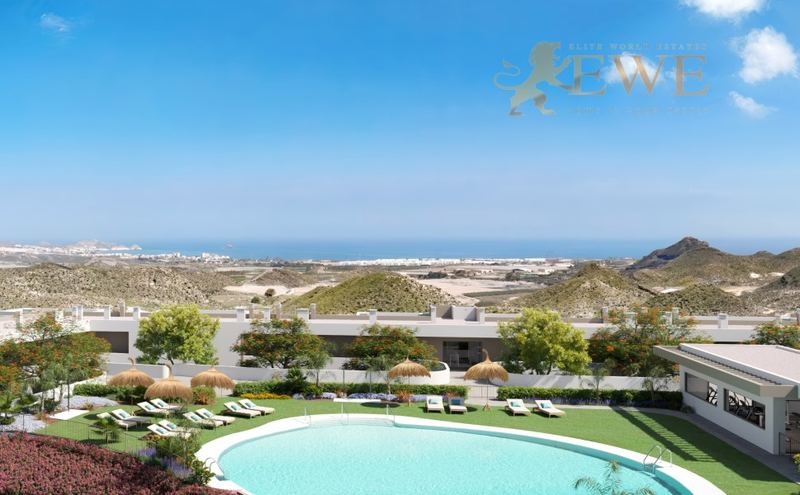
EWE3608Pulpí
Modern apartment next to the golf course in Pulpí
€179,000
1 bedroom · 1 bathroom · 49 m²Ref. EWE3608
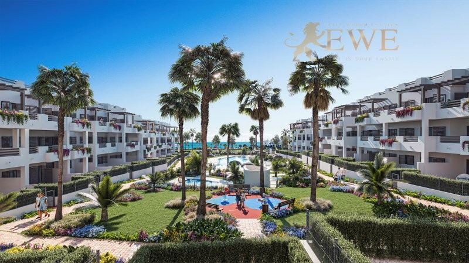
EWE3651Pulpí
Cosy apartment 200 metres from the sea in Pulpi
€182,000
1 bedroom · 1 bathroom · 45 m²Ref. EWE3651
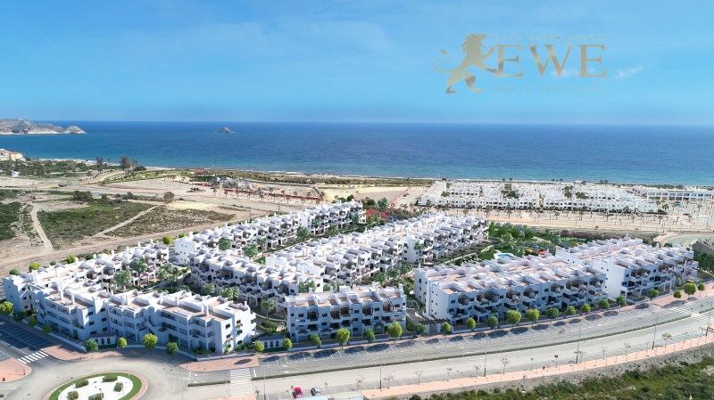
EWE2384Pulpí
Magnificent apartment on the first line to the sea in Pulpí, Costa de Almería
€182,000
1 bedroom · 1 bathroom · 43.05 m²Ref. EWE2384
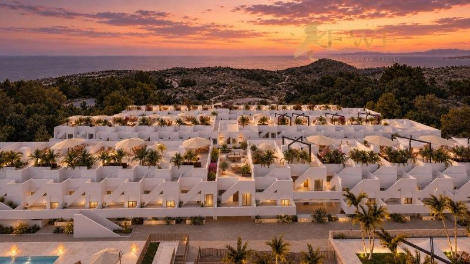
EWE3890Pulpí
New apartments with pools and Spa in picturesque Pulpí
€199,900
2 bedrooms · 2 bathrooms · 83 m²Ref. EWE3890
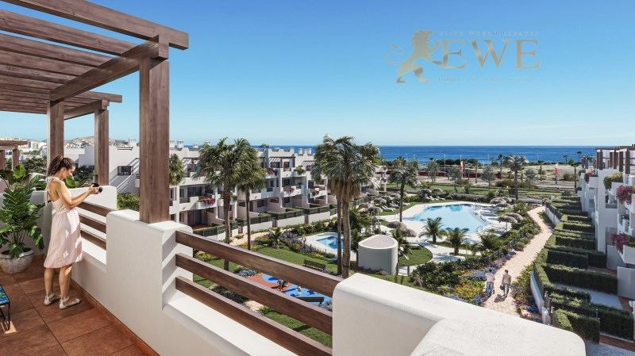
EWE3652Pulpí
Excellent apartment 500 metres from the sea in Pulpi
€212,000
2 bedrooms · 1 bathroom · 51 m²Ref. EWE3652
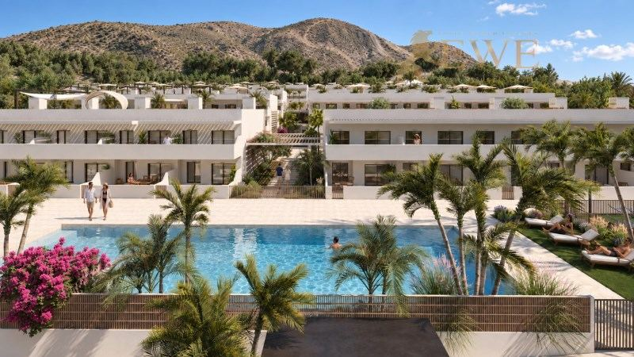
EWE3891Pulpí
New apartments with pools and Spa in picturesque Pulpí
€229,900
3 bedrooms · 2 bathrooms · 100 m²Ref. EWE3891
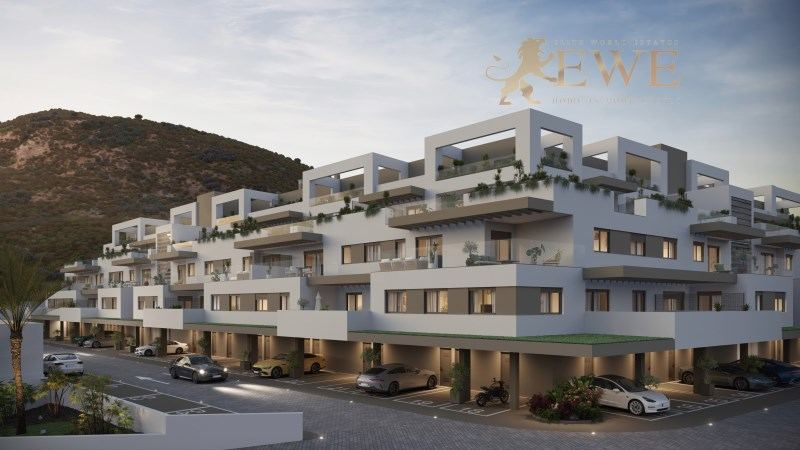
EWE3607Pulpí
Modern apartment next to the golf course in Pulpí
€230,000
2 bedrooms · 2 bathrooms · 68 m²Ref. EWE3607
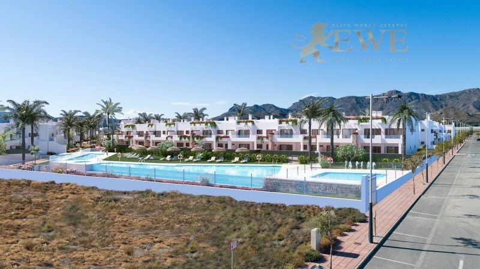
EWE2379Pulpí
Unique apartments first line to the sea in Pulpí, Costa de Almería
€258,000
2 bedrooms · 1 bathroomRef. EWE2379
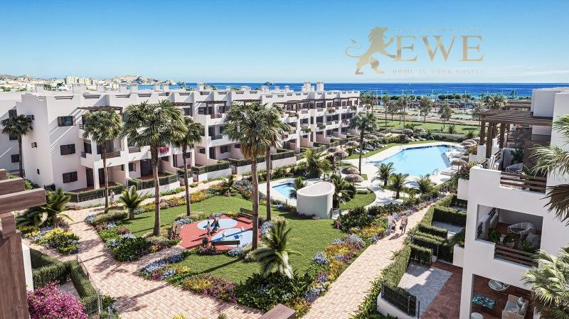
EWE3653Pulpí
The perfect apartment with a sea view in Pulpi
€275,000
3 bedrooms · 2 bathrooms · 79 m²Ref. EWE3653
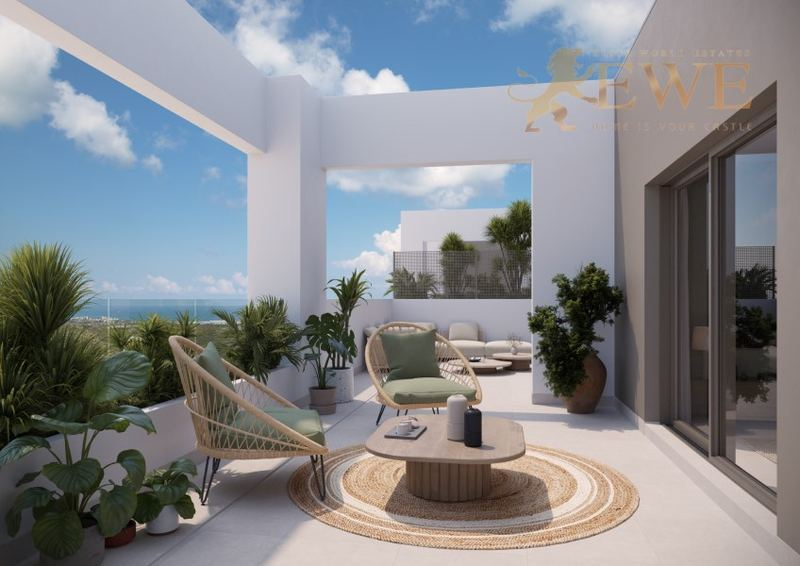
EWE3609Pulpí
Spacious apartment near a picturesque golf course in Pulpí
€331,000
3 bedrooms · 2 bathrooms · 87 m²Ref. EWE3609
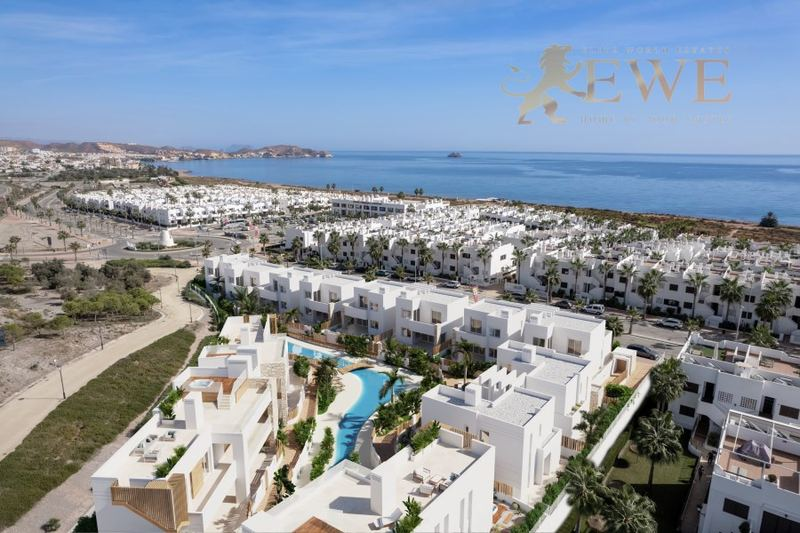
EWE3616Pulpí
Magnificent bungalow with jacuzzi just 300 metres from the beach in Pulpí
€362,000
2 bedrooms · 3 bathrooms · 125 m²Ref. EWE3616
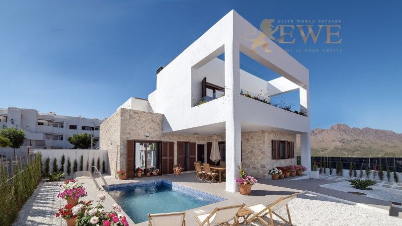
EWE3687Pulpí
A ready-to-move-in semi-detached villa 400 metres from the beaches in Pulpí
€383,000
2 bedrooms · 2 bathroomsRef. EWE3687
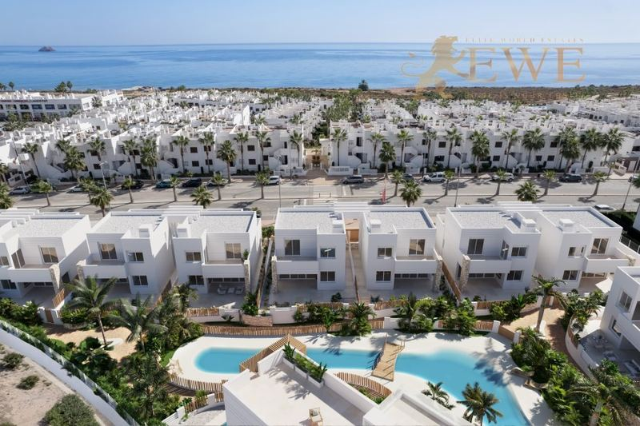
EWE3615Pulpí
Modern villa 300 metres from the sea in Pulpí
€479,000
3 bedrooms · 4 bathrooms · 254 m²Ref. EWE3615
The city
Living in Pulpí
Pulpí is a municipality in the north of the province of Almería, in Andalusia, on the border with the Region of Murcia. Its coast, around San Juan de los Terreros, has quiet beaches, small coves and clear water, and is one of the least crowded parts of the Spanish Mediterranean.
The area is known for the Geoda de Pulpí, one of the largest crystal geodes in the world, found in an old mine and open for visits. Along the coast stand the castle of San Juan de los Terreros and the volcanic rock of Isla Negra.
Life is calm, the climate is dry and sunny, and prices are among the lowest on the coast. Región de Murcia airport is about an hour away by car and Almería airport about an hour and a half, and Águilas, with more shops and services, about 15 minutes.
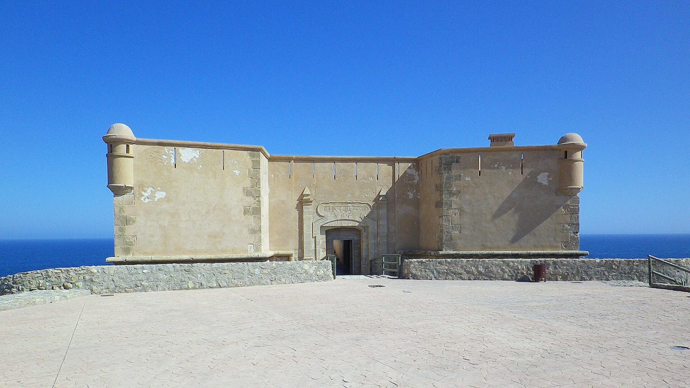
Where to buy
The main areas of Pulpí
San Juan de los Terreros
The seaside village of Pulpí, with beaches, coves and the castle. Apartments and bungalows close to the sea.
Frontline
Apartments right by the sea, with views over the water and the beach below.
Golf area
New developments next to the golf course, a few minutes from the beach. Apartments with pools and gardens.
Pulpí town
The inland town, with local shops and services and the Geoda visitor centre.
Budget
What it costs to buy in Pulpí
On top of the price you pay tax and fees. For a new home at €229,900, for example, that is €22,990 VAT and €2,759 stamp duty, plus notary, land registry and legal fees. Taxes on resale homes are different, so always ask us for the exact figure for the home you like.
| New build | 10% VAT (IVA) + 1.2% stamp duty (AJD) |
|---|---|
| Resale home | 7% transfer tax (ITP) |
| Notary, registry, lawyer | about 1.5–2.5% of the price |
| Every year | IBI property tax and community fees, which depend on the home |
Questions
Buying property in Pulpí: questions and answers
How much does an apartment cost in Pulpí?
Our apartments in Pulpí start at €179,000 today, and most with 1 to 3 bedrooms cost between €180,000 and €330,000. Bungalows and semi-detached villas near the beach cost from about €360,000, and villas about €480,000.
What is the Geoda de Pulpí?
It is a huge cave lined with clear gypsum crystals, found in an old mine near Pulpí and one of the largest geodes known. It can be visited with a guide.
How far is Pulpí from the airport?
Región de Murcia airport is about an hour away by car, and Almería airport about an hour and a half. Alicante-Elche airport is about an hour and 50 minutes away.
What costs are there on top of the price?
In Andalusia you pay 10% VAT and 1.2% stamp duty on a new build, and 7% transfer tax on a resale home. Notary, land registry and legal fees add about 1.5–2.5%.
Can foreigners buy property in Pulpí?
Yes. Anyone can buy property in Spain. You need a Spanish NIE tax number and usually a Spanish bank account, and we help you with both. See our guide to the NIE number.


Looking for a home in Pulpí?
Tell us your budget and what you need. We reply within one working day, in English, German, Spanish or Polish.